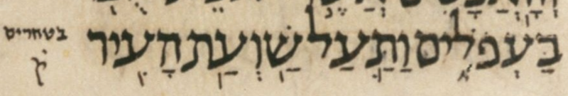

| bcv (link to tanach.us) | 1s5:12 |
| MPK | בַּעְפֹלִ֑ים |
| qere | בַּטְּחֹרִ֑ים |
| at issue | טּ |
| at issue English | added a dagesh to tet |
| folio col line | 152B 2 27 |
The MPK’s ע does not carry a dagesh for the qere’s ט, perhaps because that would be illegal.
Same issue, indeed same word modulo accent, six verses before, in 5:6.
Dotan remarks, in his Foreword to BHL (page xx):
Another example [of a point created ex nihilo] is an ʿayin of the ketiv that cannot carry a dagesh that is due in the qere, as in the manuscript in Deut. 28:27 in the [body] text וּבַעְפֹלִים and in the margin ק̇ ובטחרים; in the printed edition a dagesh was added[, yielding] וּבַטְּחֹרִים.
(In this quote, Dotan omits the accent (zaqef qatan) on the ל of וּבַעְפֹלִים and on the ר of וּבַטְּחֹרִים, perhaps because it is not germane to the topic at hand.)
Dotan’s example from dt28:27 is not a-noted in WLC, which has merely the following:
*W/B/(PLYM **W./BA/+.:XORI80YM